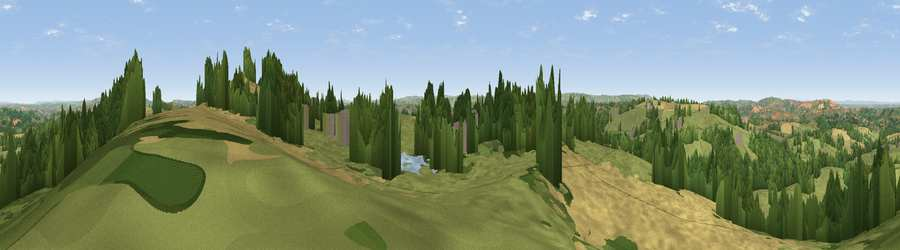

Viewpoint near Chelwood
#9770 in England · top 16% of its area beats it · near ChelwoodThe view, rendered

A 360° render of this exact spot computed from the terrain model, tree cover and land cover — summer colours, afternoon light, calibrated against photographs of famous viewpoints. Real trees, hedges and buildings will differ in detail.
The panorama
Grey silhouette: terrain skyline in each direction (720 bearings, Earth curvature and refraction included). Dashed green: skyline with trees (+15 m) and buildings (+8 m) as obstacles. Blue strip: how far the ground is visible on each bearing.
Where the view opens
Wedge length = distance to the farthest visible ground on that bearing (vegetation-aware). Rings at 10, 25 and 50 km.
What fills the view
49% grassland · 25% woodland · 23% cropland · 3% built-up ·
Angular shares of the visible panorama (visual magnitude), not map area. Landscape diversity 0.51 (0–1 Shannon).
Key numbers
More beautiful places nearby
The staircase of upgrades: each row has a higher view potential than everything closer. Driving times are estimates from straight-line distance, calibrated against real road routing — check an actual route before setting out.
| Place | Direction | Drive | Score |
|---|---|---|---|
| Viewpoint near Chelwood | E · 1 km | ~2 min | 70.6 |
| Viewpoint near Stanton Prior | NE · 5 km | ~11 min | 70.7 |
| Viewpoint near Norton Malreward | NNW · 7 km | ~15 min | 72.9 |
| Viewpoint near Kelston | NE · 10 km | ~20 min | 74.2 |
| Viewpoint near North Stoke | NE · 11 km | ~21 min | 75.4 |
| Hanging Hill | NE · 13 km | ~23 min | 76.4 |
| Beacon Batch | WSW · 15 km | ~27 min | 79.4 |
| Bleadon Hill [Loxton Hill] | W · 27 km | ~43 min | 79.6 |
51.34037, -2.52718 · source: screening · position refined by local search. Computed location — check access rights before visiting.